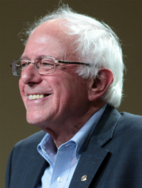

- Donald
- Hillary
- Ted 
- Bernie
- John


Donald John Trump (born June 14, 1946) is an American businessman, politician, television personality, author, and candidate for the Republican nomination for President of the United States in the 2016 election. Trump is the Chairman and President of The Trump Organization, as well as the founder of the gaming and hotel enterprise, Trump Entertainment Resorts, now owned by Carl Icahn. Trump is a son of real estate developer Fred Trump and worked for his father's firm, Elizabeth Trump & Son, while attending college. He joined the company after graduating in 1968, and in 1971 was given control, later renaming the company The Trump Organization. Trump has since built casinos, golf courses, hotels, and other properties, many of which bear his name. Trump and his businesses, as well as his three marriages, have received prominent media exposure. He hosted The Apprentice, a popular NBC reality show, from 2004 to 2015. Trump first campaigned for the U.S. presidency in 2000, winning two Reform Party primaries. On June 16, 2015, he again announced his candidacy for president, this time as a Republican.
Hillary Diane Rodham Clinton /ˈhɪləri daɪˈæn ˈrɒdəm ˈklɪntən/ (born October 26, 1947) is an American politician. She is a candidate for the Democratic nomination for President of the United States in the 2016 election. She was the 67th United States Secretary of State from 2009 to 2013. From 2001 to 2009, Clinton served as a United States Senator from New York. She is the wife of the 42nd President of the United States Bill Clinton, and was First Lady of the United States during his tenure from 1993 to 2001. eaving office at the end of Obama's first term, she authored her fifth book and undertook speaking engagements before announcing her second run for the Democratic nomination in the 2016 presidential election in April 2015.
Sanders was born and raised in Brooklyn, New York City, and graduated from the University of Chicago in 1964. While a student he was an active civil rights protest organizer for the Congress of Racial Equality and the Student Nonviolent Coordinating Committee. After settling in Vermont in 1968, Sanders ran unsuccessful third-party campaigns for governor and U.S. senator in the early to mid-1970s. As an independent, he was elected mayor of Burlington—Vermont's most populous city—in 1981, where he was reelected three times. In 1990 he was elected to represent Vermont's at-large congressional district in the U.S. House of Representatives.
John Richard Kasich (/ˈkeɪsᵻk/ kay-sick; born May 13, 1952)[2] is an American politician and the current governor of Ohio, first elected in 2010 and re-elected in 2014.[3] On July 21, 2015, he announced his candidacy for the 2016 Republican nomination for President of the United States.[4][5] Kasich served nine terms as a member of the United States House of Representatives, representing Ohio's 12th congressional district from 1983 to 2001.[6] His tenure in the House included 18 years on the House Armed Services Committee and six years as chairman of the House Budget Committee. He was a key figure in the passage of both welfare reform and the Balanced Budget Act of 1997. He was a commentator on Fox News Channel, hosting Heartland with John Kasich from 2001 to 2007. He also worked as an investment banker, serving as managing director of the Lehman Brothers office in Columbus, Ohio.[7][8] In the 2010 Ohio gubernatorial election, Kasich defeated Democratic incumbent Ted Strickland.[9] He was re-elected in 2014, defeating Democrat Ed FitzGerald by 30 percentage points.